정보처리기사(구) (2001-06-03 기출문제)
1과목: 데이터 베이스
1. 다음 설명의 괄호에 공통적으로 적용될 수 있는 단어로 가장 적합한 것은?
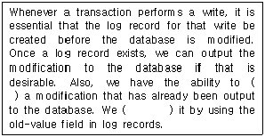
- undo
- redo
- abort
- commit
(정답률: 53%)

2. 어떤 릴레이션 R에 존재하는 모든 조인 종속성이 릴레이션 R의 후보키를 통해서만 성립된다. 이 릴레이션 R은 어떤 정규형의 릴레이션인가?
- 제 3 정규형
- 보이스-코드 정규형
- 제 4 정규형
- 제 5 정규형
(정답률: 59%)
3. 자료가 아래와 같이 주어졌을 때, 선택 정렬(selection sort)을 적용하여 오름차순으로 정렬할 경우 pass 2를 진행한 후의 정렬된 값으로 옳은 것은?
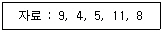
- 4, 5, 9, 8, 11
- 4, 5, 9, 11, 8
- 4, 5, 8, 11, 9
- 4, 5, 8, 9, 11
(정답률: 77%)
4. 이진 트리의 특성에 대한 설명으로 옳지 않은 것은? (단, n0 = 단말 노드 수, n1 = 차수 1인 노드 수, n2 = 차수 2인 노드 수, n = 노드의 총수, e = 간선의 총수)
- n = e + 1
- e = n1 + 2n2
- n = n0 + n1 + n2
- n0 = n2 + 2
(정답률: 47%)
5. 데이터 베이스 관리 시스템에서 데이터 언어(Data-language)에 대한 설명으로 옳지 않은 것은?
- 데이터 정의어(DDL)는 데이터베이스를 정의하거나 그 정의를 수정할 목적으로 사용하는 언어이다.
- 데이터베이스를 정의하고 접근하기 위해서 시스템과의 통신 수단이 데이터 언어이다.
- 데이터 조작어(DML)는 사용자와 데이터베이스 관리 시스템 간의 인터페이스를 제공한다.
- 데이터 제어어(DCL)는 주로 응용 프로그래머와 일반 사용자가 사용하는 언어이다.
(정답률: 69%)
6. 트랜잭션은 자기의 연산에 대하여 전부(all) 또는 전무(nothing) 실행만이 존재하며, 일부 실행으로는 트랜잭션의 기능을 가질 수 없다는 트랜잭션의 특성은?
- consistency
- atomicity
- isolation
- durability
(정답률: 66%)
7. DBA의 역할로 거리가 먼 것은?
- 응용 프로그램(Application program)의 작성
- 스키마 정의
- 무결성 제약 조건의 지정
- 저장 구조와 액세스 방법 정의
(정답률: 78%)
8. 데이터베이스에 관련된 용어의 설명으로 옳지 않은 것은?
- 튜플(tuple) - 테이블에서 열에 해당된다.
- 애트리뷰트(attribute) - 데이터의 가장 작은 논리적 단위로서 파일 구조상의 데이터 항목 또는 데이터 필드에 해당된다.
- 릴레이션(relation) - 릴레이션 스킴과 릴레이션 인스턴스로 구성된다.
- 도메인(domain) - 애트리뷰트가 취할 수 있는 값들의 집합이다.
(정답률: 66%)
9. 뷰(View)에 대한 설명으로 옳지 않은 것은?
- 둘 이상의 기본 테이블에서 유도된 실제 테이블이다.
- 논리적 데이터에 대한 독립성이 보장된다.
- 여러 사용자의 다양한 요구에 대한 지원이 편리하다.
- 자료에 대한 접근제어로 보안을 제공한다.
(정답률: 74%)
10. 3단계 데이터베이스 구성에서 모든 응용에 관하여 전체적으로 통합된 데이터 구조로서, 접근권한, 보안정책, 무결성 규칙을 영세한 것은?
- internal schema
- external schema
- auto schema
- conceptual schema
(정답률: 61%)
11. 개체-관계(Entity-Relationship) 모델을 최초로 제안한 사람은?
- P.Chen
- E. F Codd
- Bill Gates
- Lawrence J. Ellison
(정답률: 70%)
12. 논리적 데이터 모델에 대한 설명으로 옳지 않은 것은?
- 관계형 데이터 모델 - 데이터베이스를 테이블의 집합으로 표현한다.
- 네트워크 데이터 모델 - 데이터베이스를 그래프 구조로 표현한다.
- 계층적 데이터 모델 - 데이터베이스를 계층적 그래프구조로 표현한다.
- 객체지향 데이터 모델 - 데이터베이스를 객체/상속 구조로 표현한다.
(정답률: 34%)
13. 개체-관계 다이어그램에서 개체를 표시하는 것은?
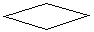
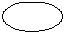
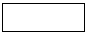
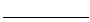
(정답률: 72%)
14. 비선형 구조와 선형 구조가 옳게 짝지어진 것은?
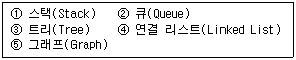
- 비선형 구조 : ①, ②, ⑤ 선형 구조 : ③, ④
- 비선형 구조 : ③, ⑤ 선형 구조 : ①, ②, ④
- 비선형 구조 : ①, ②, ③ 선형 구조 : ④, ⑤
- 비선형 구조 : ③ 선형 구조 : ①, ②, ④, ⑤
(정답률: 78%)
15. 릴레이션 R1에 저장된 튜플이 릴레이션 R2에 있는 튜플을 참조하려면 참조되는 튜플이 반드시 R2에 존재해야 한다는 데이터 무결성 규칙은?
- 개체 무결성 규칙(Entity Integrity Rule)
- 참조 무결성 규칙(Referential Integrity Rule)
- 영역 무결성 규칙(Domain Integrity Rule)
- 트리거 규칙(Trigger Rule)
(정답률: 78%)
16. 관계 데이터베이스의 테이블 지점정보(지점코드, 소속도시, 매출액)에 대해 다음과 같은 SQL 문이 실행되었다. 그 결과에 대한 설명으로 부적합한 것은?
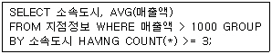
- WHERE 절의 조건에 의해 해당 도시의 지점들의 매출액 평균이 1000 이하인 경우는 출력에서 제외된다.
- 지점이 3 군데 이상 있는 도시에 대해 각 도시별로 그 도시에 있는 매출액 1000 초과인 지점들의 평균 매출액을 구하는 질의이다.
- SELECT 절의 "AVG(매출액)"을 "MAX(매출액)"으로 변경하면 각 도시 별로 가장 높은 매출을 올린 지점의 매출액을 구할 수 있다.
- HAVING 절에서 "COUNT(*)>=3"을 "SUM(매출액)>=5000"으로 변경하면 어느 한 도시의 지점들의 매출액 합이 5000 이상인 경우만 그 도시 지점들의 매출액 평균을 구할 수 있다.
(정답률: 34%)
17. 다음 영문의 괄호 안에 적합한 정렬 방법은?
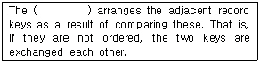
- bubble sort
- insert sort
- heap sort
- radix sort
(정답률: 64%)
18. 키 값이 문자열 또는 숫자일 경우 일련의 키 값들에 대해 일부분이 같은 문자나 숫자로 구성되었을 때, 즉 전체 키 값의 길이보다 키 값들 사이에 별개의 전위(prefix) 수가 작을 때 적합하고, 가변 길이의 키 값을 효과적으로 나타낼 수 있으며, 삽입 및 삭제시 노드의 분열과 병합이 없는 특징을 가진 색인구조는?
- B* - 트리 색인
- 트라이(trie)색인
- B - 트리 색인
- B+ - 트리 색인
(정답률: 66%)
19. 회사원이라는 테이블에서 사원명을 찾을 때, 연락번호가 Null 값이 아닌 사원명을 모두 찾을 때의 SQL 질의로 옳은 것은?
- SELECT 사원명 FROM 회사원 WHERE 연락번호 !=NULL;
- SELECT 사원명 FROM 회사원 WHERE 연락번호 <> NULL;
- SELECT 사원명 FROM 회사원 WHERE 연락번호 IS NOT NULL;
- SELECT 사원명 FROM 회사원 WHERE 연락번호 DON'T NULL;
(정답률: 82%)
20. 시스템 카탈로그에 대한 설명으로 옳지 않은 것은?
- 시스템 자신이 필요로 하는 여러 가지 개체에 대한 정보를 포함한 시스템 데이터베이스이다.
- 개체들로서는 기본 테이블, 뷰, 인덱스, 데이터베이스, 패키지, 접근 권한 등이 있다.
- 카탈로그 자체도 시스템 테이블로 구성되어 있어 일반 이용자도 SQL을 이용하여 내용을 검색해 볼 수 있다.
- 모든 데이터베이스 시스템에서 요구하는 정보는 동일하므로 데이터베이스 시스템의 종류에 관계없이 동일한 구조로 필요한 정보를 제공한다.
(정답률: 73%)
2과목: 전자 계산기 구조
21. 한 명령의 execute cycle 중에 interrupt 요청이 있어 interrupt를 처리한 후 전산기가 맞이하는 다음 사이클은?
- fetch cycle
- indirect cycle
- execute cycle
- direct cycle
(정답률: 67%)
22. 마이크로 오퍼레이션을 순서적으로 발생시키는데 필요한 것은?
- 스위치
- 레지스터
- 누산기
- 제어신호
(정답률: 50%)
23. 어떤 프로그램이 수행 중 인터럽트 요인이 발생했을 때 CPU가 확인할 사항에 속하지 않은 것은?
- 프로그램 카운터의 내용
- 모든 레지스터의 내용
- 상태조건의 내용
- 주기억장치의 내용
(정답률: 36%)
24. 타이머(timer)에 의하여 발생되는 인터럽트(interrupt)는 어디에 해당되는가?
- 프로그램 인터럽트
- 익스터널(external) 인터럽트
- I/O 인터럽트
- 머신 첵(machine check) 인터럽트
(정답률: 45%)
25. 기억장치에 기억된 정보를 액세스하기 위하여 주소를 사용하는 것이 아니고, 기억된 정보의 일부분을 이용하여 원하는 정보를 찾는 방법은?
- RAM
- Associative memory
- ROM
- Virtual memory
(정답률: 68%)
26. 채널에 관한 설명 중 옳지 않은 것은?
- 신호를 보낼 수 있는 전송로이다.
- 입·출력은 DMA 방법으로도 수행한다.
- 입·출력 수행 중 어떤 오류조건에서 중앙처리장치에 인터럽트를 걸 수 있다.
- 자체적으로 자료의 수정 또는 코드 변환 등의 기능을 수행할 수 없다.
(정답률: 54%)
27. 다음 번의 명령어가 현재의 프로그램 카운터(PC)를 기준으로 하여 어느 번지에 있음을 나타내는 주소지정 방식은?
- 상대번지 지정방식
- 간접번지 지정방식
- 직접번지 지정방식
- 절대번지 지정방식
(정답률: 55%)
28. 컴퓨터의 메모리 용량이 16K×32bit라 하면 MAR(Memory Address Register)와 MBR(Memory Buffer Register)은 각 각 몇 비트인가?
- MAR:12, MBR:16
- MAR:32, MBR:14
- MAR:12, MBR:32
- MAR:14, MBR:32
(정답률: 54%)
29. 다음의 마이크로 오퍼레이션과 관련 있는 것은?
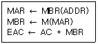
- AND
- ADD
- JMP
- BSA
(정답률: 71%)
30. 기억장치에 접근을 위하여 판독신호를 내고 나서 다음 판독신호를 낼 수 있을 때까지의 시간을 무엇이라 하는가?
- 탐색시간(seek time)
- 전송시간(transfer time)
- 접근시간(access time)
- 사이클시간(cycle time)
(정답률: 49%)
31. 가상 기억장치(virtual memory)의 특징이 아닌 것은?
- 가상기억장치의 목적은 기억공간이 아니라 속도이다.
- 가상기억공간의 구성은 프로그램에 의해서 수행된다.
- 보조기억장치는 자기 디스크를 많이 사용한다.
- 보조기억장치의 접근이 자주 발생되면 컴퓨터 시스템의 처리 효율이 저하될 수 있다.
(정답률: 59%)
32. 우선순위 인터럽트 가운데 소프트웨어적 처리 기법은?
- 스트로브(strobe) 방법
- 폴링(polling) 방법
- 병렬 우선순위(parallel priority) 방법
- 데이지-체인(daisy-chain) 방법
(정답률: 68%)
33. 피 연산자의 위치(기억 장소)에 따라 명령어 형식을 분류할 때 instruction cycle time이 가장 짧은 명령어 형식은?
- 레지스터-메모리 인스트럭션
- AC 인스트럭션
- 스택 인스트럭션
- 메모리-메모리 인스트럭션
(정답률: 53%)
34. Compiler란?
- 원시 프로그램을 기계어로 바꾸는 hardware이다.
- 원시 프로그램을 기계어로 바꾸는 software이다.
- 원시 프로그램을 기계어로 바꾸는 사용자가 직접 짠 프로그램이다.
- 기계어를 원시 코드로 바꾸는 프로그램이다.
(정답률: 64%)
35. 전자계산기의 중앙처리장치(CPU)는 4가지 단계를 반복적으로 거치면서 동작을 행한다. 4가지 단계에 속하지 않는 것은?
- Fetch cycle
- Branch cycle
- Interrupt cycle
- Execute cycle
(정답률: 72%)
36. 인터럽트 작동 순서가 올바른 것은?
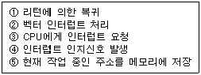
- ③⑤④②①
- ④③⑤②①
- ⑤②③①④
- ①③④⑤②
(정답률: 50%)
37. 논리회로에 의해 계산된 결과 X는? (NOT, AND, OR gate로 되어 있다.)
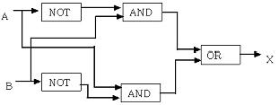
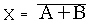
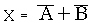
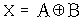
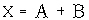
(정답률: 60%)
38. 캐시(cache) 기억장치 설명 중 옳은 것은?
- 중앙처리장치와 주기억장치의 정보교환을 위해 임시 보관하는 것
- 중앙처리장치의 속도와 주기억장치의 속도를 가능한 같도록 하기 위한 것
- 캐시와 주기억장치 사이에 정보 교환을 위하여 임시 저장하는 것
- 캐시와 주기억장치의 속도를 같도록 하기 위한 것
(정답률: 62%)
39. 기억소자와 I/O 장치간의 정보교환 때 CPU의 개입 없이 직접 정보 교환이 이루어 질 수 있는 방식은?
- Strobe 방식
- 인터럽트 방식
- Handshaking 방식
- DMA 방식
(정답률: 66%)
40. 컴퓨터에서 사용하는 명령어의 기능이 아닌 것은?
- 전달 기능
- 제어 기능
- 연산 기능
- 번역 기능
(정답률: 75%)
3과목: 운영체제
41. 교착상태 발생 조건 중 프로세스에 할당된 자원은 사용이 끝날때까지 강제로 빼앗을 수 없음을 의미하는 것은?
- mutual exclusion
- hold and wait
- circular wait
- nonpreemption
(정답률: 54%)
42. 사용자는 단말 장치를 이용하여 운영체제와 상호 작용하며, 시스템은 일정 시간 단위로 CPU를 한 사용자에서 다음 사용자로 신속하게 전환함으로써, 각각의 사용자들은 실제로 자신만이 컴퓨터를 사용하고 있는 것처럼 사용할 수 있는 처리 방식은?
- Batch Processing System
- Time-Sharing Processing System
- Off-Line Processing System
- Real Time Processing System
(정답률: 73%)
43. 시간 구역성(Temporal Locality)과 거리가 먼 것은?
- 집계(Totaling)등에 사용되는 변수
- 배열 순례(Array Traversal)
- 부프로그램(Subprogram)
- 스택(stack)
(정답률: 50%)
44. UNIX에서 각 파일에 대한 정보를 기억하고 있는 자료구조로서, 파일 소유자의 식별번호, 파일 크기, 파일의 최종 수정시간, 파일의 링크수 등의 내용을 가지고 있는 것은?
- 슈퍼블록(super block)
- inode(index node)
- 디렉토리(directory)
- 파일 시스템 마운팅(mounting)
(정답률: 74%)
45. 분산 시스템의 설계 목적으로 적합하지 않은 것은?
- 신뢰성
- 자원 공유
- 연산 속도 향상
- 보안
(정답률: 79%)
46. 스케줄링 기법 중 SJF 기법과 SRT 기법에 관한 설명으로 옳지 않은 것은?
- SJF는 비선점(nonpreemptive) 기법이다.
- SJF는 작업이 끝나기 까지의 실행시간 추정치가 가장 작은 작업을 먼저 실행시킨다.
- SRT는 시분할 시스템에 유용하다.
- SRT에서는 한 작업이 실행을 시작하면 강제로 실행을 멈출 수 없다.
(정답률: 62%)
47. 디스크 스케줄링 기법 중 항상 바깥쪽 실린더에서 안쪽으로 움직이면서 가장 짧은 탐색시간을 가지는 요청을 서비스하는 기법은?
- FCFS
- SSTF
- SCAN
- C-SCAN
(정답률: 51%)
48. 절대로더에서 각각의 기능과 수행 주체의 연결이 옳지 않은 것은?
- 연결 - 로더
- 재배치 - 어셈블러
- 적재 - 로더
- 기억장소할당 - 프로그래머
(정답률: 61%)
49. 분산 운영체제의 구조 중 아래 설명에 해당하는 구조는?
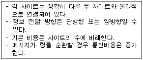
- ring connection
- hierarchy connection
- star connection
- partially connection
(정답률: 74%)
50. 분산 및 병렬처리 시스템에 대한 설명으로 거리가 먼 것은?
- 분산 및 병렬처리 시스템은 작업을 병렬적으로 수행함으로써 사용자에게 빠른 반응 시간과 작업 처리량이 향상된다.
- 사용자들이 비싼 자원들을 쉽게 공유하여 사용할 수 있으며, 작업의 부하를 균등하게 유지할 수 있다.
- 다수의 구성 요소가 존재하므로 일부가 고장나더라도 나머지 일부는 계속 작동 가능하기 때문에 사용가능도가 향상된다.
- 분산 시스템에 구성 요소 추가시 시스템의 확장은 어려우나 작업 부하를 분산시킴으로써 반응 시간이 항상 일관성 있게 유지된다.
(정답률: 48%)
51. 파일 시스템에서 중앙에 마스터 파일 디렉토리가 있고, 그 아래 사용자 파일 디렉토리가 있는 구조이며, 다른 사용자와의 파일 공유가 대체적으로 어렵고 파일 이름이 보통 사용자이름, 파일 이름의 형태를 취하므로 파일 이름의 길이가 길어지는 디렉토리 구조는?
- 단일 디렉토리 구조
- 2단계 디렉토리 구조
- 트리형태 디렉토리 구조
- 비순환 그래프 디렉토리 구조
(정답률: 58%)
52. 다음 그림과 같이 기억장치가 분할되어 있을 때, 10K의 작업을 최악 적합(worst-fit)으로 할당할 경우 배치되는 장소는?
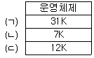
- (ㄱ)
- (ㄴ)
- (ㄷ)
- (ㄱ), (ㄴ), (ㄷ) 모두
(정답률: 73%)
53. 운영체제를 기능상으로 분류했을 때, 제어 프로그램 중 보기의 설명에 해당하는 것은?
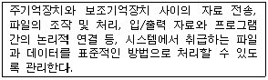
- 문제 프로그램(problem program)
- 감시 프로그램(supervisor program)
- 작업 제어 프로그램(job control program)
- 데이터 관리 프로그램(data management program)
(정답률: 60%)
54. 파일 디스크립터의 내용으로 옳지 않은 것은?
- 오류 발생시 처리 방법
- 보조기억장치의 유형
- 파일의 구조
- 접근 제어 정보
(정답률: 60%)
55. 동시에 여러 개의 작업이 수행되는 다중 프로그래밍 시스템 또는 가상 기억 장치를 사용하는 시스템에서 하나의 프로세스가 작업 수행 과정에서 수행하는 기억 장치 접근에서 지나치게 페이지 폴트가 발생함으로 인하여 전체 시스템의 성능이 저하되는 것을 무엇이라 하는가?
- fragmentation
- working set
- thrashing
- overlay
(정답률: 68%)
56. UNIX에서 두 프로세스를 연결하여 프로세스간 통신을 가능하게 하며, 한 프로세스의 출력이 다른 프로세스의 입력으로 사용됨으로써 프로세스간 정보 교환이 가능하도록 하는 것은?
- pipe
- signal
- fork
- preemption
(정답률: 52%)
57. 모니터에 대한 설명으로 옳지 않은 것은?
- 자원 요구 프로세스는 그 자원 관련 모니터 진입부를 반드시 호출한다.
- 한 순간에 하나의 프로세스만이 모니터에 진입할 수 있다.
- 정보 은폐(Information hiding)의 개념을 사용한다.
- 모니터 외부의 프로세스는 모니터 내부 데이터를 액세스 할 수 있다.
(정답률: 61%)
58. 컴퓨터 시스템의 일반적인 보안 유지 방식으로 거리가 먼 것은?
- 외부 보안(external security)
- 사용자 인터페이스 보안(user interface security)
- 공용 키 보안(public key security)
- 내부 보안(internal security)
(정답률: 60%)
59. UNIX에 대한 설명으로 옳지 않은 것은?
- 상당 부분 C 언어를 사용하여 작성되었으며, 이식성이 우수하다.
- 사용자는 하나 이상의 작업을 백그라운드에서 수행할 수 있어 여러 개의 작업을 병행 처리할 수 있다.
- 쉘(shell)은 프로세스 관리, 기억장치 관리, 입/출력 관리 등의 기능을 수행한다.
- 두 사람 이상의 사용자가 동시에 시스템을 사용할 수 있어 정보와 유틸리티들을 공유하는 편리한 작업 환경을 제공한다.
(정답률: 63%)
60. 다중 프로그래밍 시스템에서 운영체제에 의하여 CPU가 할당되는 프로세스를 변경하기 위하여 현재 CPU를 사용하여 실행되고 있는 프로세서의 상태 정보를 저장하고 제어권을 인터럽트 서비스 루틴에게 넘기는 작업을 무엇이라 하는가?
- semaphore
- monitor
- mutual exclusion
- context switching
(정답률: 60%)
4과목: 소프트웨어 공학
61. 나씨-슈나이더만(Nassi-Schneiderman) 도표는 구조적 프로그램을 표현하기 위해 고안되었다. 이 방법에서 알고리즘의 제어구조는 3가지로 충분히 표현될 수 있는데, 이에 해당하지 않는 것은?
- 선택, 다중선택(if ∼ then ∼ else, case)
- 반복(repeat ∼ until, while, for)
- 분기(goto, return)
- 순차(sequential)
(정답률: 51%)
62. 한 모듈이 다른 모듈의 내부 기능 및 그 내부 자료를 조회하는 경우의 결합도에 해당하는 것은?
- data coupling
- stamp coupling
- common coupling
- content coupling
(정답률: 44%)
63. COCOMO model 중 기관 내부에서 개발된 중소 규모의 소프트웨어로 일괄 자료 처리나 과학 기술 계산용, 비즈니스 자료 처리용으로 5만 라인 이하의 소프트웨어를 개발하는 유형은?
- semi-datached model
- organic model
- semi-embeded model
- embeded model
(정답률: 52%)
64. 프로토타이핑 모형(Prototyping Model)에 대한 설명으로 옳지 않은 것은?
- 최종 결과물이 만들어지기 전에 의뢰자가 최종 결과물의 일부 또는 모형을 볼 수 있다.
- 개발 단계에서 오류 수정이 불가하므로 유지보수 비용이 많이 발생한다.
- 프로토타입은 발주자나 개발자 모두에게 공도의 참조 모델을 제공한다.
- 프로토타입은 구현단계의 구현 골격이 될 수 있다.
(정답률: 77%)
65. 응집력이 강한 것부터 약한 순서로 옳게 나열된 것은?
- sequential → functional → procedural → coincidental → logical
- procedural → coincidental → functional → sequential → logical
- functional → sequential → procedural → logical → coincidental
- logical → coincidental → functional → sequential → procedural
(정답률: 55%)
66. 람바우의 객체 지향 분석 모델링(modeling)에 해당하지 않는 것은?
- relational modeling
- object modeling
- functional modeling
- dynamic modeling
(정답률: 59%)
67. 다음 내용을 자료사전(data dictionary)의 형태로 옳게 표기한 것은?
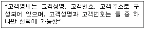
- 고객명세 : <고객성명|고객번호> + 고객주소
- 고객명세 = {고객명세|고객번호} + 고객주소
- 고객명세 = [고객성명|고객번호] + 고객주소
- 고객명세 : (고객성명|고객번호) + 고객주소
(정답률: 60%)
68. 자료흐름도의 구성 요소와 표시 기호의 연결이 옳지 않은 것은?
- 종착지(terminator) : 오각형
- 자료흐름(data flow) : 화살표
- 처리공정(process) : 원
- 자료저장소(data store) : 직선
(정답률: 73%)
69. 소프트웨어 유지보수의 유형에 해당하지 않는 것은?
- 수정보수(Corrective maintenance)
- 기능보수(Functional maintenance)
- 완전화보수(Perfective maintenance)
- 예방보수(Preventive maintenance)
(정답률: 59%)
70. 프로젝트의 지연을 방지하고 계획대로 진행되게 하기 위한 일정계획의 방법으로 대단위 계획의 조직적인 추진을 위해 자원의 제약하에 비용을 적게 사용하면서 초단시간내 계획 완성을 위한 프로젝트 일정 방법은?
- PRO/SIM(PROtyping and SIMulation)
- SLIM
- COCOMO(COnstructive COst MOdel)
- PERT/CPM(Program Evaluation and Review Technique / Critical Path Method)
(정답률: 45%)
71. 객체지향 소프트웨어 개발모형의 개발 단계로 옳은 것은?
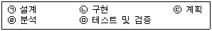
- (ㄷ)→(ㄱ)→(ㄹ)→(ㄴ)→(ㅁ)
- (ㄷ)→(ㄹ)→(ㄴ)→(ㄱ)→(ㅁ)
- (ㄷ)→(ㄴ)→(ㄹ)→(ㄱ)→(ㅁ)
- (ㄷ)→(ㄹ)→(ㄱ)→(ㄴ)→(ㅁ)
(정답률: 69%)
72. 다음 내용에 가장 적합한 것은?
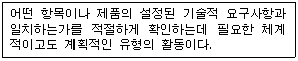
- 검열(inspections)
- 품질보증(quality assurance)
- 정적분석(static analysis)
- 기호실행(symbolic execution)
(정답률: 52%)
73. 소프트웨어 신뢰성 측정 방법으로 MTBF(Mean Time Between Failure)를 구하는 공식으로 옳은 것은? (단, MTTF : 고장에 대한 평균 시간, MTTR : 수선하기 위한 평균 시간)
- MTTF + MTTR
- {MTTF/(MTTF +MTTR)} × 100%
- (MTTF/MTTR) + MTTF
- (MTTF/MTTR) × 100%
(정답률: 30%)
74. 객체지향 시스템에서 전통적 시스템의 함수(function) 또는 프로시저(procedure)에 해당하는 연산기능을 무엇이라고 하는가?
- 메소드(method)
- 메시지(message)
- 모듈(module)
- 패키지(package)
(정답률: 71%)
75. 외계인 코드(Alien Code)에 대한 설명으로 옳은 것은?
- 프로그램의 로직이 복잡하여 이해하기 어려운 프로그램을 의미한다.
- 아주 오래되어(15년정도 이상) 유지보수 작업이 어려운 프로그램을 의미한다.
- 오류(Error)가 없이 완벽하게 수정된 프로그램을 의미한다.
- 4세대 언어로 사용자가 직접 작성한 프로그램을 의미한다.
(정답률: 48%)
76. 폭포수 모형(waterfall model)의 진행 단계로 옳은 것은?
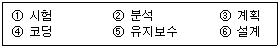
- ①-②-③-④-⑤-⑥
- ②-⑥-④-⑤-①-③
- ③-②-⑥-④-①-⑤
- ④-①-②-⑥-⑤-③
(정답률: 77%)
77. 블랙 박스 검사에 해당하지 않는 것은?
- 데이터 흐름 검사(data flow testing)
- 동치 분할 검사(equivalence partitioning testing)
- 원인 효과 그래픽 기법(cause effect graphic-technique)
- 비교 검사(comparison testing)
(정답률: 61%)
78. 소프트웨어 재사용에 관한 설명으로 거리가 먼 것은?
- 소프트웨어의 개발 생산성과 품질을 높이려는 방법이다.
- 소프트웨어 재사용의 방법에는 합성중심(composition-based)과 생성 중심(generation-based) 방법으로 나눌 수 있다.
- 재사용 부품의 크기는 클수록 재사용율이 높다.
- 소프트웨어의 재사용은 프로젝트의 실패 위험을 줄일 수 있다.
(정답률: 72%)
79. CASE에 대한 설명으로 옳지 않은 것은?
- 소프트웨어의 개발과정을 자동화함으로써 생산성을 증대시키고자 하는 목적으로 개발되었다.
- CASE는 소프트웨어 개발의 모든 단계에 걸쳐 일관된 방법론을 지원한다.
- CASE를 사용함으로 개발의 표준화를 지향하고, 자동화의 이점을 얻을 수 있다.
- CASE는 시스템의 개발 속도를 빠르게 하지만 재사용성은 떨어진다.
(정답률: 73%)
80. 두 명의 개발자가 5개월에 걸쳐 10,000 라인의 코드를 개발하였을 때, 월별(person-month) 생산성 측정을 위한 계산 방식으로 가장 적합한 것은?
- 10,000 / 2
- 10,000 / 5
- 10,000 / ( 5 × 2)
- (2 × 10,000) / 5
(정답률: 69%)
5과목: 데이터 통신
81. 많은 단말기로부터 많은 양의 통신을 필요로 하는 경우에 유리한 네트워크 형태는?
- 성형망
- 환형망
- 계층망
- 망형망
(정답률: 68%)
82. DSU에 대한 설명 중 옳지 않은 것은?
- DSU는 디지털 서비스 유닛(Digital Service Unit)의 약자이다.
- DSU는 직렬 유니폴라 신호를 변형된 바이폴라 신호로 바꿔준다.
- 데이터 전송을 위해서 필요성이 증대되고 있다.
- 모뎀이 송·수신단에 필요하다.
(정답률: 53%)
83. 정보의 전송제어 절차의 단계를 올바르게 나타낸 것은?
- 회선접속→데이터링크의 확립→데이터 전송→데이터링크의 해제 통보→ 회선절단
- 회선접속→데이터 전송→데이터링크의 확립→데이터링크의 해제 통보→회선절단
- 회선접속→데이터링크의 확립→데이터링크의 해제 통보→데이터 전송→회선절단
- 회선접속→데이터링크의 확립→데이터 전송→회선절단→데이터링크의 해제 통보
(정답률: 73%)
84. 여러 개의 터미널 신호를 하나의 통신회선을 통해 전송할 수 있도록 하는 장치는?
- 변·복조기
- 멀티플렉서
- 신호변환기
- 디멀티플렉서
(정답률: 66%)
85. 주로 하드와이어 전송 매체에서 발생되며, 전송 매체를 통한 신호 전달이 주파수에 따라 그 속도를 달리 함으로써 유발되는 신호 손상을 무엇이라 하는가?
- 감쇠현상
- 잡음
- 지연왜곡
- 누화잡음
(정답률: 54%)
86. 패킷 교환망의 주요 기능 중 하나는 이용자들의 패킷 통신을 위한 경로 배정(routing control)이다. 다음 중 패킷 교환기에 들어가는 경로 배정 프로그램 작성 시 경로 배정 요소(parameter)가 아닌 것은?
- 성능기준
- 경로의 결정 시간과 장소
- 프로그램 처리 속도
- 네트워크 정보 발생지
(정답률: 35%)
87. 매체의 데이터 전송률이 전송 디지털 신호의 데이터 전송을 능가할 때 사용하는 다중화 방식은?
- 주파수 분할 다중화
- 동기 시분할 다중화
- 통계 시분할 다중화
- 비동기 시분할 다중화
(정답률: 30%)
88. 패킷을 목적지까지 전달하기 위해 사용되는 라우팅 프로토콜은?
- ICMP(internet Control Message Protocol)
- RIP(Routing Information Protocol)
- ARP(Address Resolution Protocol)
- HTTP(HyperText Transfer Protocol)
(정답률: 62%)
89. 프로토콜이란?
- 통신 하드웨어의 표준 규격이다.
- 통신 소프트웨어의 개발 환경이다.
- 정보 전송의 통신 규약이다.
- 하드웨어와 사람 사이의 인터페이스다.
(정답률: 71%)
90. 보(baud) 속도가 2400 보오이고, 디지트(dibit)를 사용하면 전송속도는 얼마인가?
- 2400
- 4800
- 7200
- 9600
(정답률: 63%)
91. 트랜스포트 계층의 전송 서비스 단계가 아닌 것은?
- 전송 연결 설정
- 데이터 저장
- 데이터 전송
- 전송 연결 해제
(정답률: 71%)
92. IEEE에 의한 LAN은 OSI 7계층 구조상 어느 부분에 위치하고 있나?
- 물리 계층과 데이터링크 계층
- 데이터링크 계층과 네트웍 계층
- 네트웍 계층과 전송 계층
- 전송 계층과 세션 계층
(정답률: 48%)
93. 송신 요구를 먼저한 쪽이 송신권을 갖는 방식을 무엇이라 하는가?
- Contention 방식
- Polling 방식
- Selection 방식
- Routing 방식
(정답률: 50%)
94. X.25 프로토콜을 사용하는 통신망에서 패킷 교환을 하기 위해서 실시하는 데이터가 아닌 것은?
- 호 요구(call request)
- 호 설정(call setup)
- 데이터 전송(data transfer)
- 호 제거(call cleaning)
(정답률: 33%)
95. 데이터 링크 프로토콜인 HDLC(High level Data Link Control)에서 프레임의 동기를 제공하기 위해 사용되는 구성요소는?
- 플래그(Flag)
- 제어부(Control)
- 정보부(Information)
- 프레임 검사 시퀀스(Frame Check Sequence)
(정답률: 62%)
96. 슬라이딩 윈도우 프로토콜에서 송신 윈도우가 증가하는 경우는 언제인가?
- 송신측으로부터 이전에 송신한 프레임에 대한 긍정 수신 응답이 왔을 때
- 수신측으로부터 이전에 송신한 프레임에 대한 긍정 수신 응답이 왔을 때
- 수신측으로부터 이전에 송신한 프레임에 대한 부정 수신 응답이 왔을 때
- 증가되지 않는다.
(정답률: 52%)
97. 인터네트워킹 장비로서 네트워크 계층에서 연동하여 경로를 설정하고 전달하는 기능을 제공하는 장비는?
- 라우터
- 브리지
- 허브
- 리피터
(정답률: 67%)
98. 접속된 통신 회선상에서 송신측과 수신측 간의 확실한 데이터 전송을 수행하기 위해 논리적 경로를 구성하는 단계는?
- 회선 연결
- 데이터 링크 확립
- 데이터 전송
- 회선 절단
(정답률: 73%)
99. 집중화기(Concentrator)의 특징이 아닌 것은?
- 구조가 복잡하면서 규칙적인 전송에 사용한다.
- 입·출력 각 각의 대역폭이 다르다.
- m개의 입력 회선을 n개의 출력 회선으로 집중화하는 장치이다.
- 입력 회선의 수는 출력 회선의 수보다 같거나 많아야 한다.
(정답률: 38%)
100. 다이얼-업 모뎀(dial-up MODEM)의 역할이 아닌 것은?
- 자동 호출 기능
- 자동 응답 기능
- buffering 기능
- loop test 기능
(정답률: 42%)